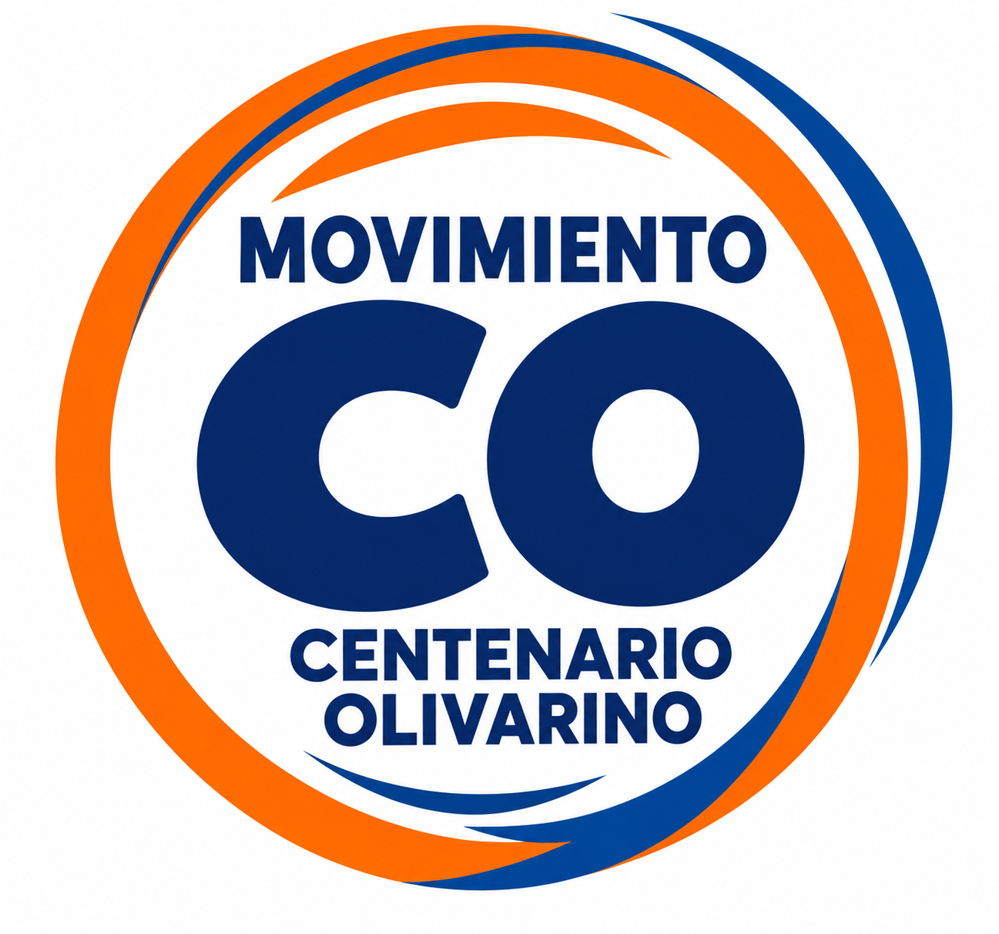
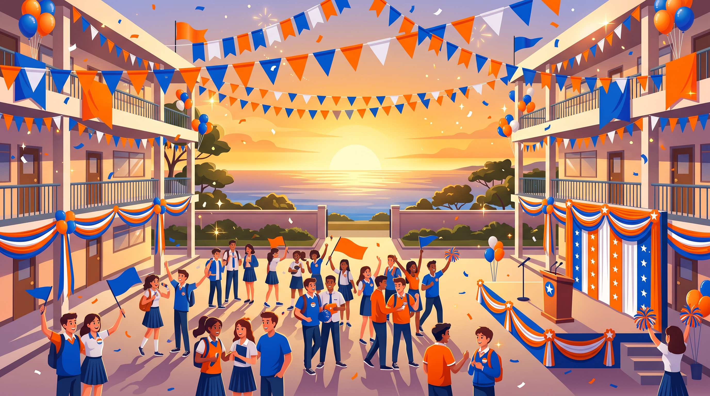

Símbolo Electoral
Logo Oficial Movimiento C.O.
El emblema que encontrarás en la cédula de votación. Representa la unión del Centenario Olivarino.

Movimiento C.O. Centenario Olivarino · CAO
ELECCIONES MUNICIPIO ESCOLAR · I.E. CARLOS A. OLIVARES
¡EL CAMBIO COMIENZA CONTIGO!
NO VENIMOS A PROMETER, VENIMOS A TRABAJAR. Por un colegio con respeto, oportunidades, participación y mejores condiciones para todos.
Conoce los símbolos que representan la fuerza, alegría y compromiso del Movimiento C.O. (Centenario Olivarino) en el Colegio Carlos A. Olivares.
El emblema que encontrarás en la cédula de votación. Representa la unión del Centenario Olivarino.
Con su traje y capa naranja del C.O., simboliza la energía para trabajar con fuerza por nuestro colegio.
Con la camiseta bien puesta del Movimiento C.O., invitando a todos los salones a votar por la mejor opción.
Nuestra casa de estudios por la que trabajaremos aula por aula junto a los docentes y la dirección.
Explora todas nuestras categorías: Convivencia, Deporte, Salud e Higiene, Recreos, Medio Ambiente, Representación, Cultura, Reconocimiento y Transparencia.
Toca cada etapa para ver cómo organizaremos el trabajo desde el primer día como Municipio Escolar.
En nuestras primeras semanas instalaremos el Buzón de Confianza en un punto accesible del colegio y realizaremos la primera reunión con los delegados de todas las secciones para registrar las urgencias de los servicios higiénicos y necesidades de cada salón.
Supera el reto en cualquiera de nuestros 2 juegos para recibir una Clave Interna Única. Toma captura de pantalla y envíala con tu clave a nuestro WhatsApp para reclamar tu premio.
Encuentra las 6 parejas en menos de 18 intentos para sumar +1 victoria a tu racha.
¡Toca cualquier carta naranja de C.O. para empezar!
Porque hacer campaña con propuestas reales también es divertirse entre compañeros. Toca cualquier imagen para verla en tamaño completo.